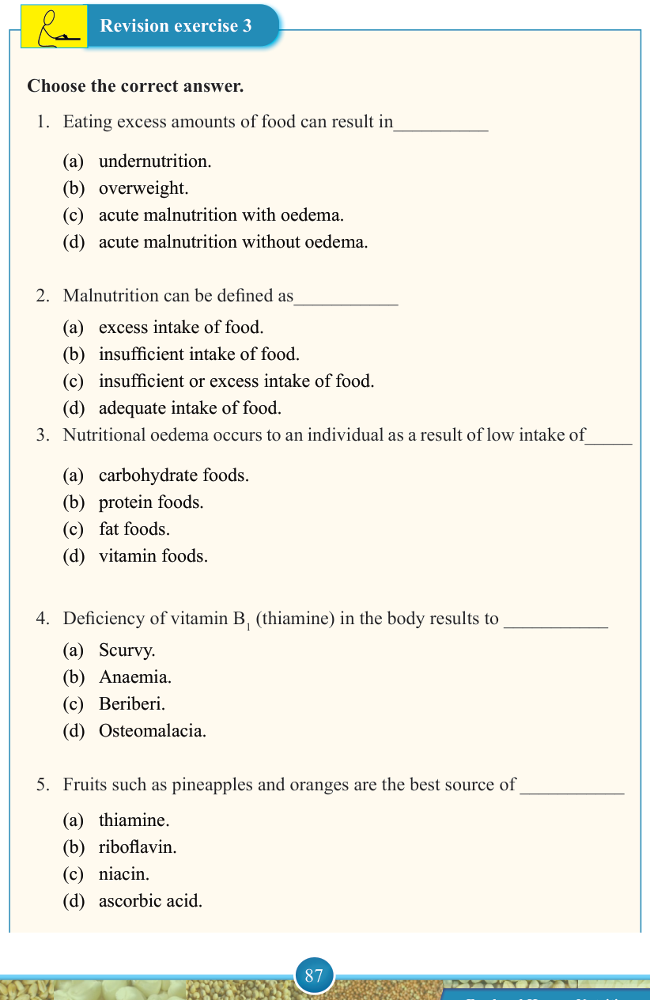

87


Food and Human Nutrition

Form Two
Revision exercise 3
Choose the correct answer.
1. Eating excess amounts of food can result in__________
(a) undernutrition.
(b) overweight.
(c) acute malnutrition with oedema.
(d) acute malnutrition without oedema.
2. Malnutrition can be defined as___________
(a) excess intake of food.
(b) insufficient intake of food.
(c) insufficient or excess intake of food.
(d) adequate intake of food.
3. Nutritional oedema occurs to an individual as a result of low intake of_____
(a) carbohydrate foods.
(b) protein foods.
(c) fat foods.
(d) vitamin foods.
4. Deficiency of vitamin B1 (thiamine) in the body results to ___________
(a) Scurvy.
(b) Anaemia.
(c) Beriberi.
(d) Osteomalacia.
5. Fruits such as pineapples and oranges are the best source of ___________
(a) thiamine.
(b) riboflavin.
(c) niacin.
(d) ascorbic acid.
17/09/2025 16:30